Docker Compose 사전 준비docker 설치(선택사항) VS Code 온라인 설치LAB 3. Docker Composedocker-compose 설치하기설치 확인(선택사항) 명령어 축약하기docker-compose를 사용하는 이유1. docker 실행 명령어를 일일이 입력하기가 복잡해서2. 컨테이너끼리 연결하기 편해서3. 특정 컨테이너끼리만 통신할 수 있는 가상 네트워크 환경을 편리하게 관리하고 싶어서4. 이 모든 것을 간단한 명령어로 관리하고 싶어서실습: NGINX 서버를 도커 컴포즈로 실행하기docker run 명령어로 nginx 서버 실행docker-compose.yml로 nginx 서버 실행하기docker-compose.yml 파일 문법데모: Ghost 블로그를 도커 컴포즈로 실행하기Ghost 블로그를 실행하는 docker run 명령어를 작성합니다.앞에서 완성한 도커 명령을 ghost/docker-compose.yml 파일로 옮겨봅시다.영속 데이터를 호스트가 아닌 docker 볼륨에 저장하기Ghost 시스템과 NGINX 연결하기환경변수 추가하기docker-compose 명령어실습: 워드프레스를 도커 컴포즈로 실행하기Wordpress 컨테이너MySQL 컨테이너생각해보기: 환경변수 추가시 적용 순서는?Dockerfile-dev 파일에 다음 내용을 추가합니다docker-compose.yml 파일의 django 컨테이너 아래 다음 내용을 추가합니다실제 환경변수의 값을 확인합니다연습 문제문제 1. Flask(python) + Redis 웹 서비스 실행하기문제 2: 방명록 서비스 실행하기문제 3 : 깃랩 서비스 실행하기실행 결과 확인하기문제 4: 도커 컴포즈로 Django 개발 환경 구성하기
Docker Compose
도커 컴포즈의 필요성을 이해하고 다양한 사용법을 실습합니다.
사전 준비
docker 설치
x1curl -fsSL https://get.docker.com/ | sudo sh23sudo usermod -aG docker $USER(선택사항) VS Code 온라인 설치
xxxxxxxxxx101curl -fsSL https://code-server.dev/install.sh | sh -s -- --dry-run23curl -fsSL https://code-server.dev/install.sh | sh45vi .config/code-server/config.yaml67# 127.0.0.1:8080 -> 0:81808# password: AAAAAA -> {비밀번호}910sudo systemctl enable --now code-server@$USER온라인 코드 에디터 주소 - http://{IP}:8180
LAB 3. Docker Compose
목적: 여기서는 도커 컴포즈의 필요성을 이해하고 도커 컴포즈로 기본적인 개발 환경을 구축해봅니다.
docker-compose 설치하기
xxxxxxxxxx31sudo curl -L "https://github.com/docker/compose/releases/download/1.24.0/docker-compose-$(uname -s)-$(uname -m)" -o /usr/local/bin/docker-compose23sudo chmod +x /usr/local/bin/docker-compose설치 확인
xxxxxxxxxx11docker-compose version(선택사항) 명령어 축약하기
docker-compose가 너무 길어서 귀찮을 때.
xxxxxxxxxx21# ~/.bashrc 파일 가장 아랫 부분에 다음 내용을 추가2alias dco='docker-compose'xxxxxxxxxx21source ~/.bashrc2dcodocker-compose를 사용하는 이유
1. docker 실행 명령어를 일일이 입력하기가 복잡해서
예시 1) nginx 컨테이너 실행
xxxxxxxxxx11docker run -it nginx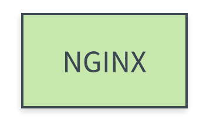
예시 2) nginx 컨테이너 실행 + 호스트의 8080 포트 연결
xxxxxxxxxx11docker run -it -p 8080:80 nginx
예시 3) nginx 컨테이너 실행 + 호스트의 8080 포트 연결 + 컨테이너 종료시 자동 삭제
xxxxxxxxxx11docker run -it -p 8080:80 --rm nginx예시 4) nginx 컨테이너 실행 + 호스트의 8080 포트 연결 + 컨테이너 종료시 자동 삭제 + 호스트의 디렉터리를 컨테이너 안에 링크
xxxxxxxxxx71# ~/project/nginx/index.html23<html>4<body>5<h1>Hello Docker-Compose</h1>6</body>7</html>xxxxxxxxxx11docker run -it -p 8080:80 --rm -v $(pwd):/usr/share/nginx/html/ nginx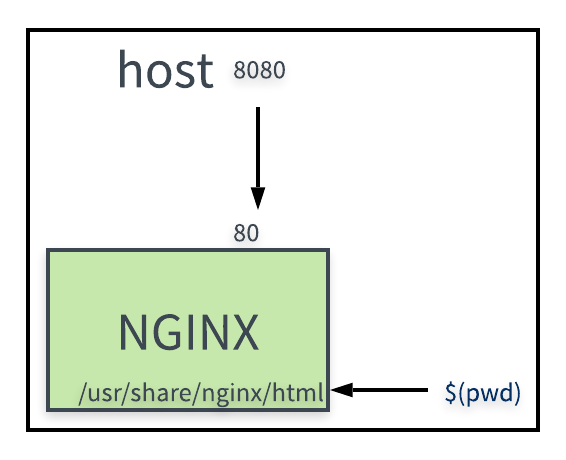
2. 컨테이너끼리 연결하기 편해서
준비) django-sample 이미지를 빌드합니다
xxxxxxxxxx51git clone https://github.com/raccoonyy/django-sample-for-docker-compose.git django-sample23cd django-sample45docker build -t django-sample .예시 1) django 컨테이너 실행 + postgres 컨테이너 실행
xxxxxxxxxx91docker run --rm -d --name django \2 -p 8000:8000 \3 django-sample45docker run --rm -d --name postgres \6 -e POSTGRES_DB=djangosample \7 -e POSTGRES_USER=sampleuser \8 -e POSTGRES_PASSWORD=samplesecret \9 postgres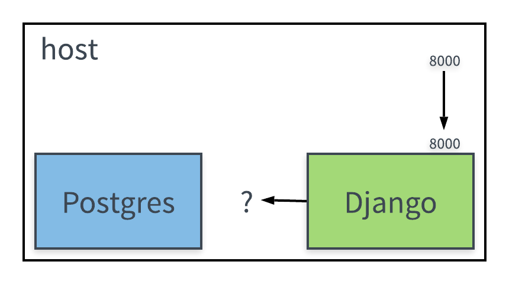
예시 2) postgres 컨테이너 실행 + django 컨테이너 실행 + 서로 연결하기
xxxxxxxxxx111docker run --rm -d --name postgres \2 -e POSTGRES_DB=djangosample \3 -e POSTGRES_USER=sampleuser \4 -e POSTGRES_PASSWORD=samplesecret \5 postgres67docker run -d --rm \8 -p 8000:8000 \9 -e DJANGO_DB_HOST=db \10 --link postgres:db \11 django-sample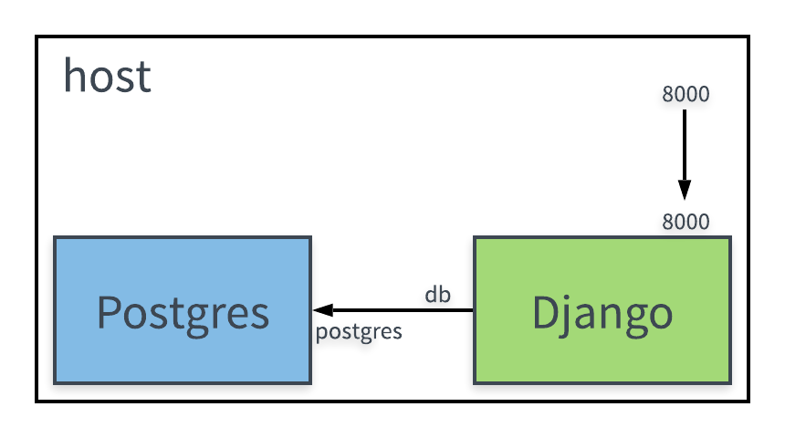
3. 특정 컨테이너끼리만 통신할 수 있는 가상 네트워크 환경을 편리하게 관리하고 싶어서
예시 1) postgres 컨테이너 실행 + django1 컨테이너 연결
xxxxxxxxxx111docker run --rm -d --name postgres \2 -e POSTGRES_DB=djangosample \3 -e POSTGRES_USER=sampleuser \4 -e POSTGRES_PASSWORD=samplesecret \5 postgres67docker run -d --rm --name django1 \8 -p 8000:8000 \9 -e DJANGO_DB_HOST=db \10 --link postgres:db \11 django-sample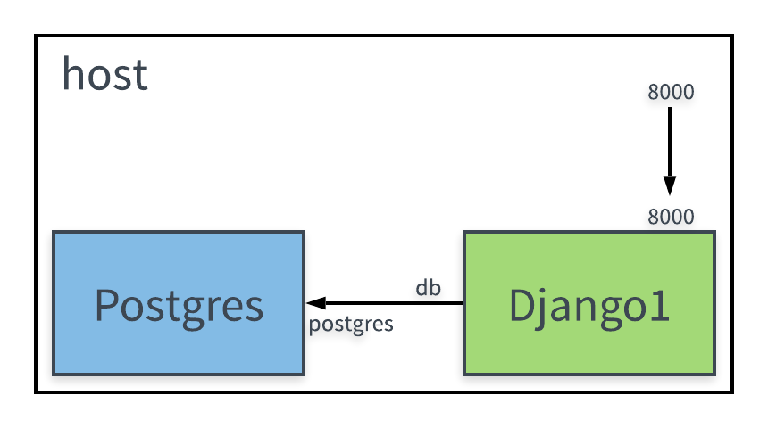
예시 2) postgres 컨테이너는 호스트의 다른 컨테이너들이 모두 접근할 수 있음
xxxxxxxxxx51docker run -d --rm --name django2 \2 -p 8001:8000 \3 -e DJANGO_DB_HOST=db \4 --link postgres:db \5 django-sample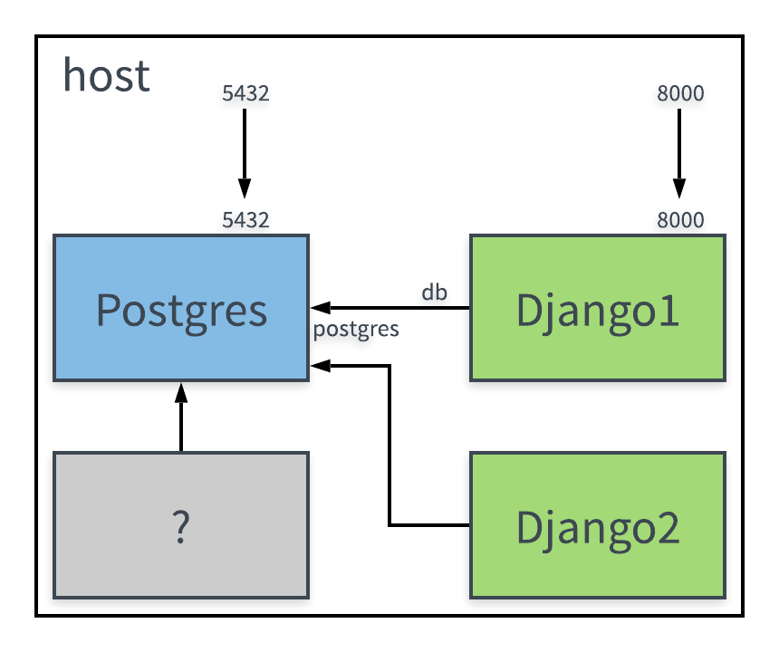
예시 3) postgres 컨테이너 + django1 컨테이너만 통신할 수 있는 가상 네트워크 만들기
xxxxxxxxxx21# 도커 네트워크 살펴보기2docker network lsxxxxxxxxxx41# 도커 네트워크 생성하기2docker network create --driver bridge web-service34docker network ls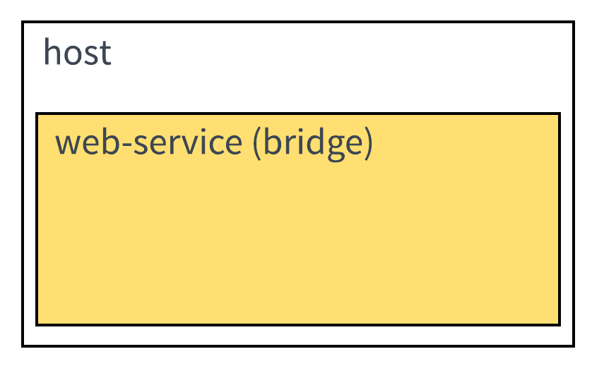
xxxxxxxxxx201# 컨테이너 실행하기2docker run --rm -d --name postgres \3 --network web-service \4 -e POSTGRES_DB=djangosample \5 -e POSTGRES_USER=sampleuser \6 -e POSTGRES_PASSWORD=samplesecret \7 postgres89docker run -d --rm --name django1 \10 --network web-service \11 -p 8000:8000 \12 -e DJANGO_DB_HOST=db \13 --link postgres:db \14 django-sample1516docker run -d --rm --name django2 \17 -p 8001:8000 \18 -e DJANGO_DB_HOST=db \19 --link postgres:db \20 django-sample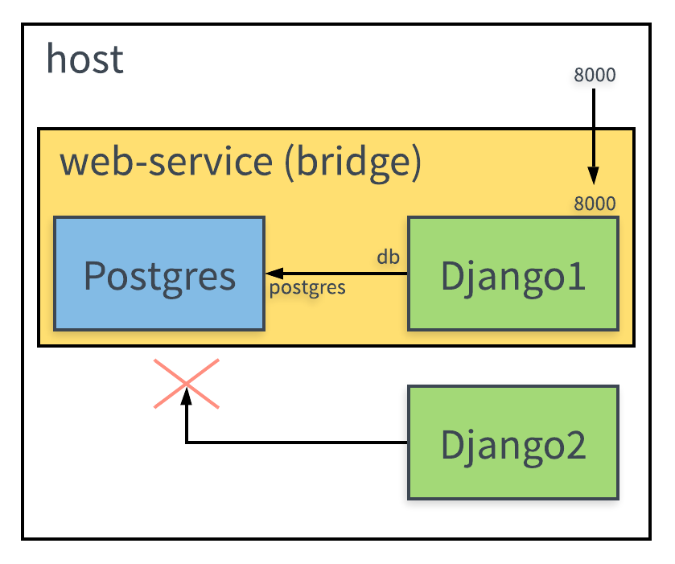
docker의 네트워크 모드 종류
- bridge: 해당 네트워크 안에서만 통신 가능
- host: 호스트와 똑같은 네트워크 환경
- none: 아무 네트워크도 사용하지 않음
4. 이 모든 것을 간단한 명령어로 관리하고 싶어서
xxxxxxxxxx211# 실행 명령어와 종료 명령어2docker network create --driver bridge web-service34docker run --rm -d --name postgres \5 --network web-service \6 -p 5432:5432 \7 -e POSTGRES_DB=djangosample \8 -e POSTGRES_USER=sampleuser \9 -e POSTGRES_PASSWORD=samplesecret \10 postgres1112docker run -d --rm --name django1 \13 --network web-service \14 -p 8000:8000 \15 -e DJANGO_DB_HOST=db \16 --link postgres:db \17 django-sample1819docker kill django1 postgres2021docker network rm web-servicedocker-compose.yml
xxxxxxxxxx291version'3'23volumes4 postgres_data56services7 db8 imagepostgres9 volumes10postgres_data:/var/lib/postgres/data11 environment12POSTGRES_DB=djangosample13POSTGRES_USER=sampleuser14POSTGRES_PASSWORD=samplesecret1516 django17 build18 context.19 dockerfile./compose/django/Dockerfile-dev20 volumes21./:/app/22 command"./manage.py" "runserver" "0:8000"23 environment24DJANGO_DB_HOST=db25 depends_on26db27 restartalways28 ports298000:8000도커 컴포즈로 실행하고 종료하기
xxxxxxxxxx31docker-compose up -d23docker-compose down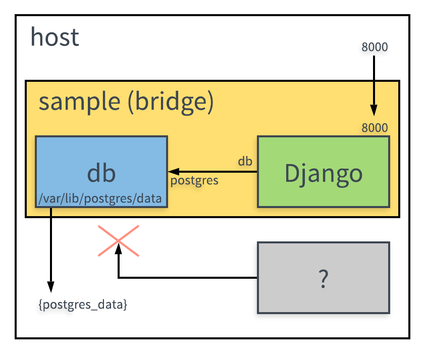
실습: NGINX 서버를 도커 컴포즈로 실행하기
docker run 명령어로 nginx 서버 실행
- 문제: 다음 내용으로 nginx 서버를 실행해보세요.
| 정보 | 내용 |
|---|---|
| 이미지 | nginx:latest |
| Listening Port | 80 |
| HTML 경로 | /usr/share/nginx/html |
- 호스트의 60080 포트를 컨테이너의 80 포트로 연결하세요.
- index.html 파일을 만들고, NGINX 접속시 이 파일이 나타나게 해보세요.
docker-compose.yml로 nginx 서버 실행하기
- 문제: 다음
()을 채워보세요
xxxxxxxxxx91version'3'23services4 nginx5 image()6 ports7():()8 volumes9():()docker-compose.yml 파일 문법
version
docker-compose.yml 파일의 명세 버전
xxxxxxxxxxversion'3'services
실행할 컨테이너를 정의 (docker run --name django와 같다고도 생각할 수 있음)
xxxxxxxxxxservices postgres ... django ...image
컨테이너에 사용할 이미지 이름과 태그 (태그를 생략하면 latest)
xxxxxxxxxxservices django imagedjango-samplebuild
컨테이너에 사용할 이미지를 직접 빌드할 때 image 대신 build (별도의 Dockerfile이 필요함)
xxxxxxxxxxservices django build context. dockerfile./compose/django/Dockerfile-devports
컨테이너와 연결할 포트(들)
{호스트포트}:{컨테이너포트}
xxxxxxxxxxservices django ... ports"8000:8000"environment
컨테이너에서 사용할 환경변수(들)
{환경변수이름}:{값}
xxxxxxxxxxservices mysql ... environmentMYSQL_ROOT_PASSWORD=somewordpressvolumes
마운트하려는 디렉터리(들)
{호스트 디렉터리}:{컨테이너 디렉터리}
xxxxxxxxxxservices django ... volumes./app:/applink (legacy)
다른 컨테이너와 연결
{연결할 컨테이너 이름}:{해당 컨테이너에서 참조할 이름}
xxxxxxxxxxservices mysql ... django ... linkmysql:dbdepends_on
컨테이너 실행 의존성
xxxxxxxxxxservices mysql ... django ... depends_onmysql데모: Ghost 블로그를 도커 컴포즈로 실행하기
Ghost는 간단한 블로깅 시스템입니다. Ghost에서 제공하는 공식 도커 이미지를 사용하면, 간단하게 Ghost 시스템을 실행할 수 있습니다.
Ghost 블로그를 실행하는 docker run 명령어를 작성합니다.
docker run 명령으로 ghsot 이미지를 실행합니다.
xxxxxxxxxx11docker run -it --name blog --rm -p 2368:2368 ghost브라우저에서 http://IP:2368/ghost 를 열어봅시다. 관리자 설정을 해보고, 글을 새로 작성하거나 샘플 글을 수정해봅시다.
이제, 컨테이너를 종료한 후 앞선 명령을 한 번 더 실행해봅시다.
xxxxxxxxxx11docker run --rm -p 2368:2368 --name blog ghost브라우저를 열어 관리자 페이지(http://IP:2368/ghost)에 가보면, 이전에 설정한 내용이 모두 사라졌음을 확인할 수 있습니다.
현재까지 컨테이너의 구성도는 다음과 같습니다.
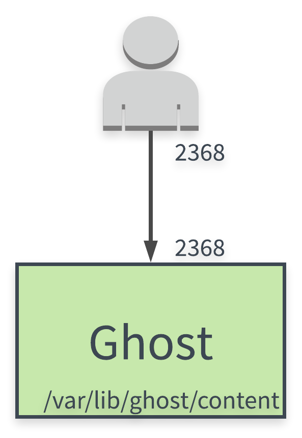
블로그 데이터는 영속적이어야하므로, 데이터가 로컬 디렉터리에 저장되게 해봅시다. 데이터를 저장할 content 디렉터리를 만들고,
xxxxxxxxxx11mkdir content다음 명령으로 컨테이너를 실행합니다.
xxxxxxxxxx11docker run --rm -p 2368:2368 --name blog -v $(pwd)/content:/var/lib/ghost/content ghost이제 http://IP:62368/ghost 에서 다시 한 번 관리자 설정을 하고, 컨테이너를 종료한 후 다시 실행해봅시다.
볼륨을 연결한 이후의 컨테이너는 다음과 같은 모습입니다.
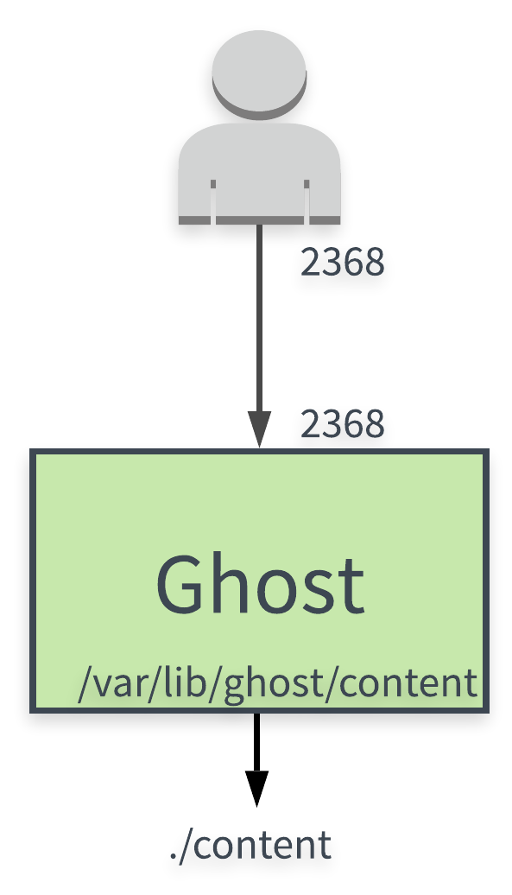
앞에서 완성한 도커 명령을 ghost/docker-compose.yml 파일로 옮겨봅시다.
먼저, 앞서 실행했던 Ghost 컨테이너를 종료합니다.
xxxxxxxxxx11docker kill blog이제 다음과 같이 ghost/docker-compose.yml 파일을 만듭니다.
xxxxxxxxxx71version'3'23services4 ghost5 imageghost6 ports7"2368:2368"docker 명령어의 v 옵션은 volumes와 같습니다.
xxxxxxxxxx31...2volumes3folder_in_host:folder_in_container문제: 앞선
docker-compose.yml파일에 빠진 볼륨 연결 설정을 추가해봅시다.
xxxxxxxxxx91version'3'23services4 ghost5 imageghost6 ports7"2368:2368"8 ()9():()docker-compose.yml 파일에 적힌 내용을 바탕으로 Ghost 컨테이너를 실행해봅시다.
xxxxxxxxxx11docker-compose up[http://IP:2368/ghost]에 접속하여 잘 실행되었는지 확인해봅니다.
컨테이너를 종료하려면 다음 명령을 사용합니다.
xxxxxxxxxx11docker-compose down영속 데이터를 호스트가 아닌 docker 볼륨에 저장하기
xxxxxxxxxx121version'3'23volumes4 ghost_data56services7 ghost8 imageghost9 ports10"2368:2368"11 volumes12ghost_data:/var/lib/ghost/content이제 로컬의 디렉터리를 삭제해봅시다.
xxxxxxxxxx11rm -rf contentcontent의 데이터가 사라졌으니 설정은 다시 해야겠지만, 앞으로는 디렉터리 대신 docker volume에 데이터가 저장됩니다.
xxxxxxxxxx51docker-compose up23docker-compose down 45docker-compose upGhost 시스템과 NGINX 연결하기
Ghost 시스템은 그 자체로도 잘 작동하지만 앞단에 NGINX 같은 웹 서버를 둠으로써 처리 성능을 높이거나 여타 기능을 사용할 수 있습니다. 이 구조를 docker-compose.yml에 구현해봅시다.
docker-compose를 이용하여 여러 개의 컨테이너 연결
- 기존: (요청) -> ghost
- nginx 사용: (요청) -> nginx -> ghost
xxxxxxxxxx171# docker-compose.yml2version'3'34volumes5 ghost_data67services8 ghost9 imageghost10 volumes11ghost_data:/var/lib/ghost/content12 nginx13 imagenginx14 volumes15./nginx.conf:/etc/nginx/nginx.conf16 ports178000:80ghost 서비스 쪽에서 ports가 사라진 것과 nginx 서비스의 포트 연결을 주의 깊게 살펴보세요.
그리고 다음과 같이 nginx.conf 파일을 생성합니다.
xxxxxxxxxx191# nginx.conf2events {3 worker_connections 1024;4}56http {7 upstream ghost {8 server ghost:2368;9 }10 11 server {12 listen 80;13 server_name _;1415 location / {16 proxy_pass http://ghost;17 }18 }19}이제 도커 컴포즈로 nginx, ghost 서비스를 다시 실행한 후 http://IP:8000 으로 접속할 수 있는지 확인해봅시다.
Nginx 컨테이너를 연결한 구성도는 다음과 같습니다.
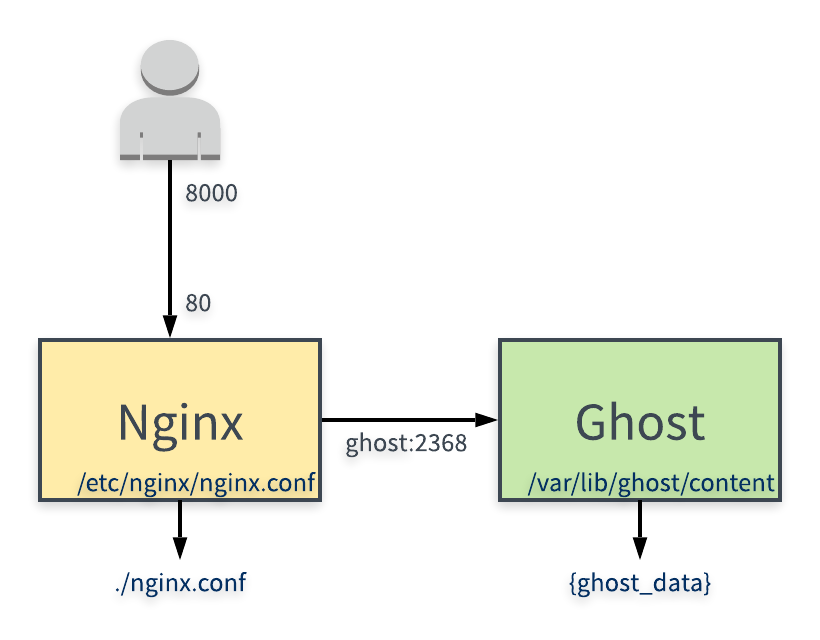
환경변수 추가하기
docker 명령어의 e 옵션은 environment와 같습니다.
xxxxxxxxxx31...2environment3ENV_NAME=ENV_VALUE
http://IP:8000/ghost/#/site 에 가보면 미리보기가 제대로 나타나지 않는 것을 확인할 수 있습니다. Ghost 내부의 주소를 나타내는 환경변수의 기본 값이 localhost:8000이기 때문입니다.
- 문제: ghost 컨테이너의 url 환경변수로
http://IP:8000를 추가해봅시다.
xxxxxxxxxx191# docker-compose.yml2version'3'34volumes5ghost_data67services8 ghost9 imageghost10 volumes11ghost_data:/var/lib/ghost/content12 environment13()14 nginx15 imagenginx16 volumes17./nginx.conf:/etc/nginx/nginx.conf18 ports198000:80- ghost 서비스의 환경변수 설정은 https://docs.ghost.org/concepts/config/#section-running-ghost-with-config-env-variables 문서를 참고하였습니다.
파일을 저장하고 컨테이너를 다시 실행합니다.
xxxxxxxxxx31docker-compose down23docker-compose up -d이제 도커 컴포즈로 서비스를 다시 실행한 후 http://IP:8000/ghost/#/site 에서 미리보기가 제대로 나타나는지 확인해봅시다.
docker-compose 명령어
docker-compose ps
현재 실행 중인 서비스 목록을 보여줍니다.
docker-compose pull [service]
필요한 이미지를 다운받습니다.
docker-compose build [service]
필요한 이미지를 빌드합니다.
docker-compose create [service]
서비스를 생성합니다.
docker-compose start [service]
서비스의 컨테이너를 구동합니다.
* docker-compose up [service] = (build) + create + start
서비스를 구동합니다. (서비스와 네트워크가 없으면 만들고, 이미지가 없으면 빌드도 합니다.)
- -d: 데몬 모드로 실행합니다.
- --build: 강제로 이미지를 다시 빌드합니다.
- --force-recreate: 컨테이너를 새로 생성합니다.
docker-compose logs [service]
- -f: 로그 계속 보기
docker-compose stop [service]
서비스를 멈춥니다.
docker-compose kill [service]
서비스의 컨테이너들을 삭제합니다.
* docker-compose down [service] = stop + kill
서비스를 멈추고 컨테이너를 삭제합니다.
- -v: 도커 볼륨도 함께 삭제합니다.
* docker-compose run {service} {command}
해당 서비스에 컨테이너를 하나 더 실행합니다.
- -e: 환경변수를 설정합니다.
- -p: 연결할 포트를 설정합니다.
- --rm: 컨테이너 종료시 자동으로 삭제합니다.
* docker-compose exec {container} {command}
해당 서비스의 컨테이너에서 명령어를 실행합니다.
- -e: 환경변수를 설정합니다.
실습: 워드프레스를 도커 컴포즈로 실행하기
- 문제: 다음과 같은 구성으로 docker-compose.yml 파일을 작성해보세요.
Wordpress 컨테이너
| 설정 | 설명 |
|---|---|
| 이미지 | wordpress |
| Listening Port | 80 |
| WORDPRESS_DB_HOST 환경변수 | 디비 주소 (db:3306) |
| WORDPRESS_DB_USER 환경변수 | 디비 사용자 (wp) |
| WORDPRESS_DB_PASSWORD 환경변수 | 디비 패스워드 (wp) |
| WORDPRESS_DB_NAME 환경변수 | 디비 이름 (wp) |
MySQL 컨테이너
| 설정 | 설명 |
|---|---|
| 이미지 | mysql:5.7 |
| Listening Port | 3306 |
| MYSQL_ROOT_PASSWORD 환경변수 | 디비 root 비밀번호 |
| MYSQL_DATABASE 환경변수 | 디비 데이터베이스 (wp) |
| MYSQL_USER 환경변수 | 디비 사용자 (wp) |
| MYSQL_PASSWORD 환경변수 | 디비 패스워드 (wp) |
| 디비 데이터 저장 디렉토리 | /var/lib/mysql |
구성도
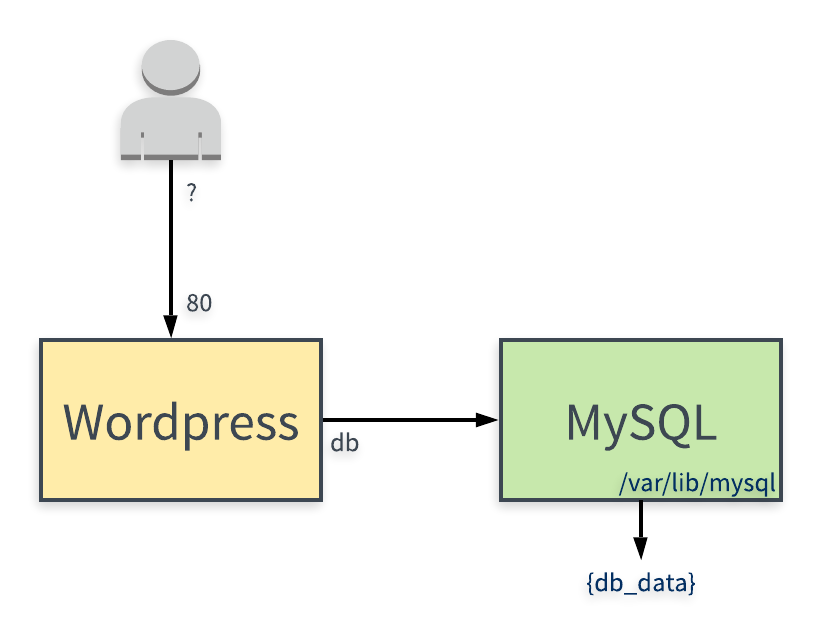
xxxxxxxxxx131version'3.3'23services4 db5 imagemysql5.76 ...78 wordpress9 imagewordpresslatest10 ...1112volumes13 db_data생각해보기: 환경변수 추가시 적용 순서는?
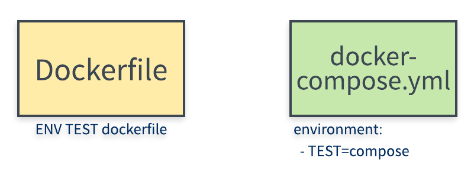
Dockerfile-dev 파일에 다음 내용을 추가합니다
- ENV TEST_ENV dockerfile_value
docker-compose.yml 파일의 django 컨테이너 아래 다음 내용을 추가합니다
xxxxxxxxxx41 django2 ...3 environment4TEST_ENV=compose_value실제 환경변수의 값을 확인합니다
xxxxxxxxxx21$ docker-compose run django bash2echo $TEST_ENV연습 문제
프론트엔드와 백엔드, 데이터베이스까지 한꺼번에 도커 컴포즈로 실행해봅니다.
문제 1. Flask(python) + Redis 웹 서비스 실행하기
다음 앱을 빌드하고 docker-compose 파일을 작성합니다.
- app.py
- requirements.txt
- Dockerfile
flask
| 설정 | 설명 |
|---|---|
| Listening Port | 5000 |
| redis host명 | redis (코드에 지정돼 있음) |
redis
| 설정 | 설명 |
|---|---|
| 이미지 | redis |
구성도
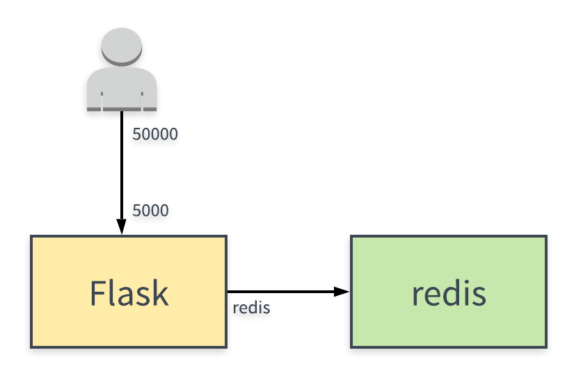
app.py
xxxxxxxxxx251import time23import redis4from flask import Flask56app = Flask(__name__)7cache = redis.Redis(host='redis', port=6379)8910def get_hit_count():11 retries = 512 while True:13 try:14 return cache.incr('hits')15 except redis.exceptions.ConnectionError as exc:16 if retries == 0:17 raise exc18 retries -= 119 time.sleep(0.5)202122.route('/')23def hello():24 count = get_hit_count()25 return 'Hello World! I have been seen {} times.\n'.format(count)requirements.txt
xxxxxxxxxx21flask2redisDockerfile
xxxxxxxxxx91FROM python:3.7-alpine2WORKDIR /code3ENV FLASK_APP app.py4ENV FLASK_RUN_HOST 0.0.0.05RUN apk add --no-cache gcc musl-dev linux-headers6COPY requirements.txt requirements.txt7RUN pip install -r requirements.txt8COPY . .9CMD ["flask", "run"]- 웹 애플리케이션을 빌드하여 이미지를 만듭니다.
- docker-compose.yml을 작성하여 50000 포트로 서버를 실행합니다.
- 새로고침할때 숫자가 증가하는 것을 확인합니다.
문제 2: 방명록 서비스 실행하기
다음과 같은 구성으로 docker-compose.yml 파일을 작성해보세요.
프론트엔드
| 정보 | 내용 |
|---|---|
| 이미지 | subicura/guestbook-frontend:latest |
| PORT 환경변수 | 서비스를 실행할 포트 |
| GUESTBOOK_API_ADDR 환경변수 | Backend 서버 주소 ex) backend:8000 |
백엔드
| 정보 | 내용 |
|---|---|
| 이미지 | subicura/guestbook-backend:latest |
| PORT 환경변수 | 서비스를 실행할 포트 |
| GUESTBOOK_DB_ADDR 환경변수 | DB 서버 주소 ex) mongodb:27017 |
데이터베이스
| 정보 | 내용 |
|---|---|
| 이미지 | mongo:4 |
| Listening Port | 27017 |
| 볼륨 설정 | /data/db |
구성도
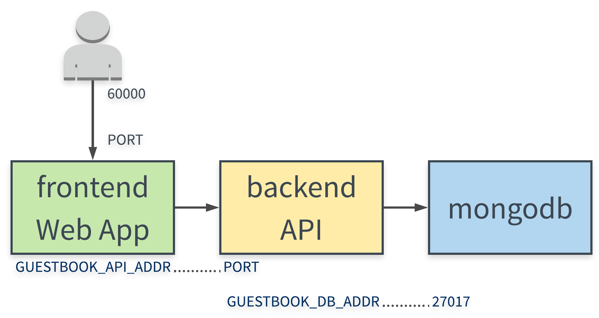
문제 3 : 깃랩 서비스 실행하기
깃랩은 깃허브와 비슷한 환경을 제공하는 소스코드 저장소 서비스입니다. 다만, 설치하기가 매우 까다롭기로 유명한데요. 이미 만들어진 도커 이미지를 사용하면 깃랩을 쉽게 실행할 수 있습니다.
깃랩 도커 이미지를 실행할 때 필요한 내용은 다음과 같습니다. 이를 활용하여 도커 컴포즈로 깃랩 서비스를 실행해보세요.
주의사항
{IP}부분은 환경에 따라 적절히 수정해야 합니다.- 실행되기까지 시간이 꽤 걸립니다. (5~10분 정도)
| 설정 | 설명 |
|---|---|
| Listening Port | 80 |
| restart | always |
| hostname | '{IP}' |
| GITLAB_OMNIBUS_CONFIG 환경 변수 | external_url 'http://{IP}' |
| 볼륨 설정 | /etc/gitlab |
| 볼륨 설정 | /var/log/gitlab |
| 볼륨 설정 | /var/opt/gitlab |
GITLAB_OMNIBUS_CONFIG 환경 변수는 다음과 같이 입력합니다.
xxxxxxxxxx51...2 environment3 GITLAB_OMNIBUS_CONFIG4 external_url 'http://{IP}'5...실행 결과 확인하기
- http://{IP} 로 접속이 잘 되는지 확인합니다.
- https://{IP} 로도 접속이 잘 되는지 확인합니다.
문제 4: 도커 컴포즈로 Django 개발 환경 구성하기
다음과 같은 구성으로 docker-compose.yml 파일을 작성해보세요.
Postgres 컨테이너
| 정보 | 내용 |
|---|---|
| 이미지 | postgres:latest |
| Listening Port | 5432 |
| POSTGRES_DB 환경 변수 | 데이터베이스 이름 (djangosample) |
| POSTGRES_USER 환경 변수 | 데이터베이스 사용자 이름 (sampleuser) |
| POSTGRES_PASSWORD 환경 변수 | 데이터베이스 사용자의 비밀번호 (samplesecret) |
| 볼륨 설정 | /var/lib/postgres/data |
Django 컨테이너
| 정보 | 내용 |
|---|---|
| 이미지 빌드용 도커 파일 | ./compose/django/Dockerfile-dev |
| Listening Port | 8000 |
| DJANGO_DB_HOST 환경 변수 | 데이터베이스의 호스트 이름 (db) |
| 볼륨 설정 | /app |
개발 환경 구성을 위한 별도의 Dockerfile
xxxxxxxxxx141# ./compose/django/Dockerfile-dev2# ./Dockerfile에 존재하던 내용은 주석으로 표시3FROM python:345ENV PYTHONUNBUFFERED 167WORKDIR /app8# COPY ./app /app/9COPY ./app/requirements.txt /app/10RUN pip install -r requirements.txt1112EXPOSE 80001314# CMD ["python", "manage.py", "runserver", "0:8000"]구성도
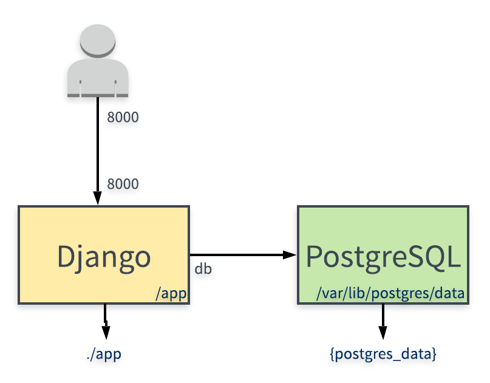